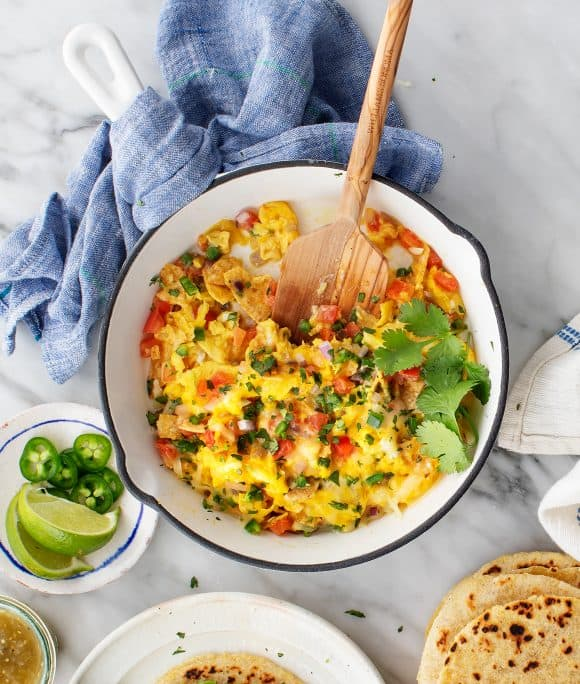

Austin style Migas

Description
Migas is a dish traditionally made from stale bread and other ingredients in Spanish and Portuguese cuisines. Crumbled tortilla chips, melty cheese, and soft scrambled eggs create an incredible creamy/crunchy texture. Onions, tomatoes, and cilantro add lots of fresh flavor, and jalapeños amp up the heat. Splash your migas with salsa and stuff them into tortillas, and you will be asking for seconds before you know it!
Ingredients
Preparing
- 1 teaspoon extra-virgin olive oil
- ¼ cup diced red onion
- 2 roma tomatoes, cored and diced
- ½ to 1 jalapeño, seeded and diced
- 1 garlic clove, finely chopped
- 5 eggs, beaten
- ¼ cup crumbled tortilla chips
- ½ cup shredded jack cheese
- ¼ cup chopped cilantro
- Sea salt and freshly ground black pepper
Serving
- 4 tortillas, charred
- Avocado slices
- Lime wedges
- Homemade Salsa or Tomatillo Salsa
Steps
- Heat the oil in a medium nonstick skillet over medium heat. Add the onion, tomato, jalapeño, garlic, ¼ teaspoon sea salt, and several grinds of fresh pepper. Cook for 2 minutes, stirring, until softened. Add the eggs and crumbled chips and stir to scramble. Stir in cheese and remove from the skillet.
- Sprinkle with cilantro, season to taste with more salt and pepper, and serve with tortillas, avocado slices, lime wedges, and salsa.